main dalı (2a1aa09) ve sonrasındaki arayüz geliştirmeleri
Önceki sürüme göre
Yeni yan menü ve ekran adları, Ana Sayfa, Ctrl+K arama, bildirimler, Proje ve Kaynak Değerlendirme, Haftalık Kritik Konular, Aktivite Raporu Excel çıktısı ve renk bantları. Yeni bölümler YENİ ile işaretlidir.
Ekran görüntüleri
Kurgusal test verisiyle alınmıştır; gerçek kişi veya proje bilgisi içermez.
1. Giriş ve ekran düzeni
Sisteme giriş
Uygulama adresini tarayıcıda açın. Oturum Aç formunda imleç Kullanıcı Adı alanındadır.
Kullanıcı adınızı ve Şifre'nizi yazıp Giriş Yap'a basın. Göz simgesi şifreyi gösterir; Caps Lock açıksa alanın altında uyarı çıkar. Beni Hatırla oturumu bu tarayıcıda 30 gün açık tutar (işaretlenmezse 12 saat); ortak bilgisayarda işaretlemeyin.
Active Directory hesabıyla kurum şifrenizi kullanırsınız; hesabınıza ayrıca uygulama rolü tanımlanmış olmalıdır.
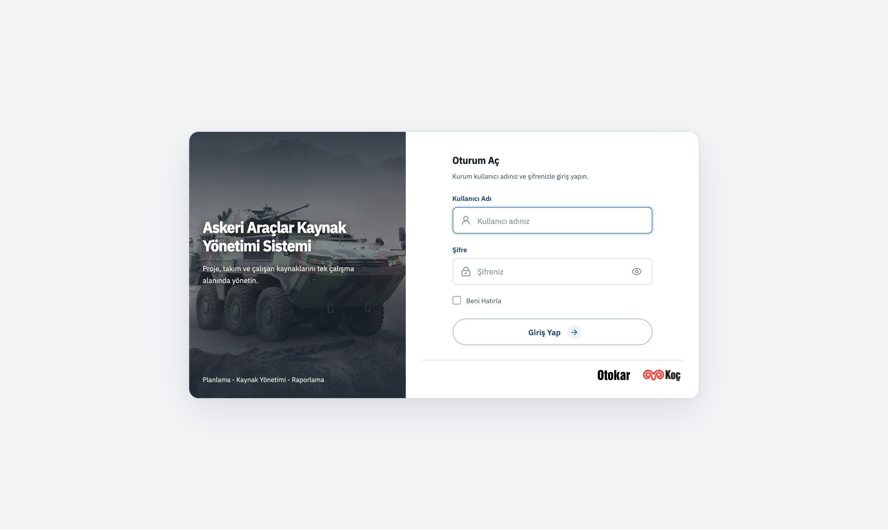
Giriş ekranı. Soldaki araç görseli her açılışta değişir.
Ekranın bölümleri
Sol menü: Rolünüzün açabildiği ekranlar gruplar halinde listelenir (Ana Sayfa · planlama ve projeler · raporlar · aktivite · yönetim). Menü başlığındaki düğme menüyü daraltır veya açar.
Üst çubuk: Otokar logosu, açık ekranın adı, Ara… kutusu (Ctrl+K), bildirim çanı, kullanıcı menüsü ve Çıkış. Üst çubuk sayfa kaydırılsa da görünür kalır.
Ekran başlığı ve alt sekmeler: Bazı ekranlarda başlığın altında alt sekmeler bulunur (örneğin Projeler → Proje Takvimi Güncelle). Sağda Görünüm seçimi, ekrana özel düğmeler ve indirme (↓) düğmesi yer alır.
Filtreler: Liderlik, Takım, Proje, Kişi, Başlangıç Ayı ve Görünür Dönem gibi seçimler. Tek bir değer seçildiğinde adı, birden fazla seçildiğinde sayısı görünür. Filtreleri Sıfırla varsayılana döndürür. Filtre yalnız görünümü daraltır, yetki vermez.
Kısa bildirimler: "Veritabanına kaydedildi" gibi mesajlar sağ altta birkaç saniye görünür; hata mesajları ekranda kalır.
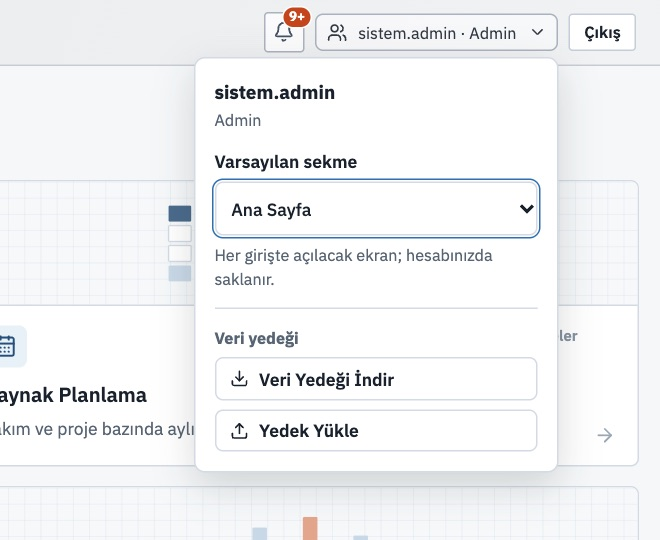
Kullanıcı menüsü: rol, Varsayılan sekme (her girişte açılacak ekran, hesabınızda saklanır) ve Admin için veri yedeği işlemleri.
2. Roller ve menüler
Her hesabın tek bir uygulama rolü vardır. Rol, menüde hangi ekranların görüneceğini ve hangi kayıtların değiştirilebileceğini belirler. Ayrıntılı karşılaştırma 13. bölümdeki yetki matrisindedir.
Admin
Tüm ekranları ve verileri görür, tümünü düzenler. Hedef plan onayı, ay kilidi, uyarı ayarları, senaryo onayı ve takvime aktarma; çalışan, hesap, organizasyon, ortak çalışma takvimi, değişiklik geçmişi ve yedekleme yalnız Admin'dedir.
Yönetici
Kaynak Planlama'da tüm takımları görür, kendisine verilen liderlik veya takım kapsamında giriş yapar. Kendi liderliklerinin hedef planını ve aylık gerçekleşen yüzdesini girer. Projeleri, kritik konuları ve raporları görüntüler; senaryo taslağı hazırlar.
Normal Kullanıcı
Kendi aylık aktivitesini ve kişisel izin/eğitim takvimini girer. Kendi takımının Aktivite Raporu'nu ve kendisine görünür projeleri görüntüler.
Normal-Proje
Projeler ve Haftalık Kritik Konular ekranlarında Admin ile aynı yetkilere sahiptir: proje ekler, düzenler, siler, sıralar; aşama, başlık, not ve kilometre taşlarını yönetir; proje görüntüleme yetkisini belirler.
Menüdeki ekran
Admin
Yönetici
Normal Kullanıcı
Normal-Proje
Ana Sayfa
✓
✓
✓
✓
Projeler
✓
✓
✓
✓
Kaynak Planlama
✓
✓
—
—
Proje ve Kaynak Değerlendirme
✓
✓
—
—
Haftalık Kritik Konular
✓
✓
—
✓
Raporlar
✓
✓
—
—
Aktivite Giriş
✓
✓
✓
—
Aktivite Raporu
✓
✓
✓
—
Organizasyon & Çalışan & Yetki
✓
—
—
—
Kaynak rolü ile uygulama rolü farklıdır. Çalışan kaydındaki Lider, Product Owner, Team Member veya CoE bilgisi organizasyondaki görevi gösterir; kendiliğinden uygulama yetkisi vermez. Uygulama rolü, çalışan formundaki Hesap ve Yetkiler bölümünden atanır.
Yönetici yetki kapsamı
Liderlik yetkisi: Seçilen liderlik ve altındaki tüm liderlik/takımlar için planlama girişi ve bu birimlerdeki çalışanların aktivite girişi.
Takım yetkisi: Yalnız seçilen takım için planlama girişi; o takımdaki çalışanların aktivitesini düzenleme hakkı vermez.
Yönetici, başka bir çalışanın kişisel izin/eğitim takvimini açamaz.
3. Ana Sayfa, arama ve bildirimler YENİ
Giriş sonrası varsayılan ekran Ana Sayfa'dır. Üst satırda karşılama, rol, tarih ve hafta numarası; altında açabildiğiniz her ekran için bir kart bulunur. Karta tıklamak ilgili ekranı açar. Farklı bir açılış ekranı için kullanıcı menüsündeki Varsayılan sekme'yi kullanın.
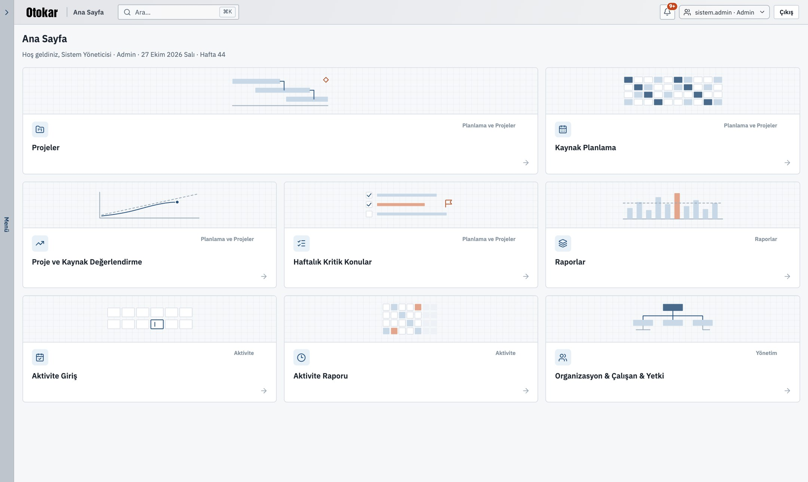
Ana Sayfa (Admin). Kartlar rolünüze göre değişir.
Genel arama (Ctrl+K)
Üst çubuktaki Ara… kutusuna tıklayın veya Ctrl+K (Mac: ⌘+K) tuşlayın.
Ekran, proje, liderlik, takım veya kişi adının bir kısmını yazın. Büyük/küçük harf ve Türkçe karakter farkı gözetilmez.
↑↓ ile seçip Enter'a basın. Seçili satırın sağında nereye gidileceği yazar: proje Projeler'de, liderlik/takım Kaynak Planlama'da, kişi Aktivite Giriş'te ilgili filtreyle açılır. Esc kapatır.
Yalnız açabildiğiniz ekranlar ve görebildiğiniz kayıtlar listelenir.
Bildirimler
Çan simgesi, başkalarının kapsamınızdaki son değişikliklerini gösterir: yeni proje, kilometre taşı ve aşama değişiklikleri, hedef plan onayı, aylık gerçekleşen girişi, ay kilidi, senaryo kayıtları.
Kırmızı rozet okunmamış sayısını gösterir. Liste kapatılınca bildirimler okundu sayılır; bu bilgi tarayıcınızda tutulur.
Bir bildirime tıklamak ilgili ekranı açar. Aynı kişinin aynı kayıttaki art arda değişiklikleri tek satırda toplanır.
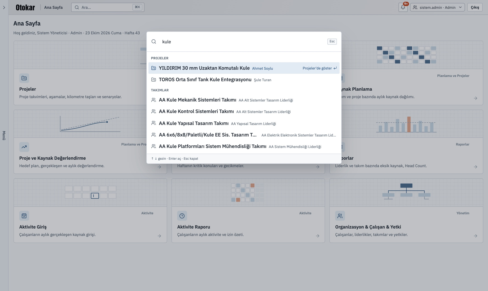
"kule" araması: projeler ve takımlar.
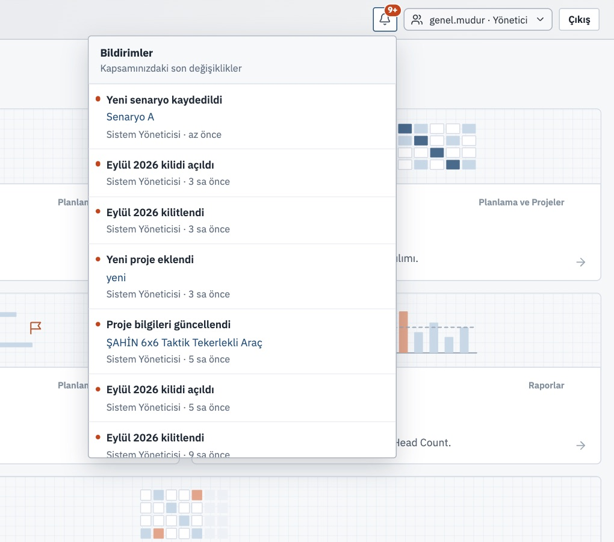
Bildirim listesi (Yönetici).
4. Projeler
Tüm roller görebildiği projeleri burada izler (proje görüntüleme yetkisine tabi). Düzenleme işlemleri Admin ve Normal-Proje içindir. Satırda proje adı, sorumlusu, dönemi ve aşamaları görünür; kilit simgesi kısıtlı görünürlüğü, sağdaki sayı kritik konu sayısını gösterir.
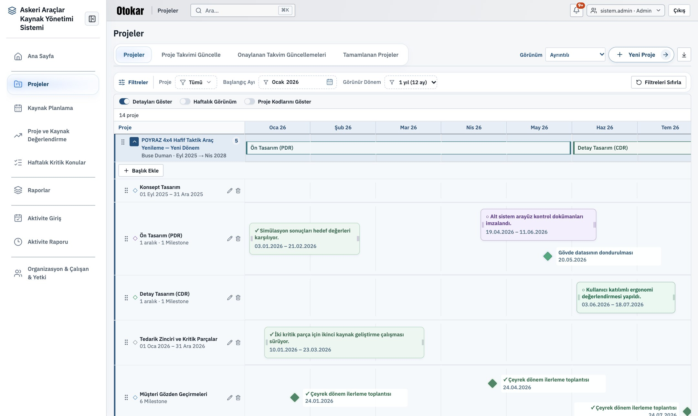
Detayları Göster açıkken aşamaların altında başlıklar, tarih aralıklı notlar ve kilometre taşları (baklava) görünür.
Görünüm ve araçlar
Görünüm: Ayrıntılı, Kompakt veya 5 Yıllık Genel Bakış. Görünür Dönem 6 aydan 5 yıla kadar seçilir.
Haftalık Görünüm aylık aşamaları haftalara yansıtır. Proje Kodlarını Göster açıksa Excel çıktısına kod sütunu eklenir.
İndirme (↓) düğmesi proje raporunu Excel olarak indirir.
Proje ekleme ve düzenleme
Yeni Proje ile proje adı, kodu, sorumlusu, başlangıç ve bitiş ayını girin; gerekirse Görüntüleme yetkisini belirleyin. Kaydet.
Var olan projeyi düzenlemek için proje adına tıklayın. Projeler soldaki tutamaçla sürüklenerek veya Alt+ok tuşlarıyla sıralanır.
Aşama için ay kutusuna çift tıklayın; metin ve renk seçin. Komşu aylar seçilip sağ tık menüsüyle aşama kopyalanabilir.
Detayları Göster açıkken başlık, tarih aralıklı not veya tek tarihli kilometre taşı ekleyin. Kritik Konulara Ekle ile not Haftalık Kritik Konular'a taşınır. Barı veya baklavayı sürükleyerek tarihi değiştirebilirsiniz.
Projeyi Sil, projenin planlanan ve gerçekleşen dağılımlarını, aşamalarını, değerlendirme kayıtlarını ve bağlı konularını da kaldırır.
Proje görüntüleme yetkisi
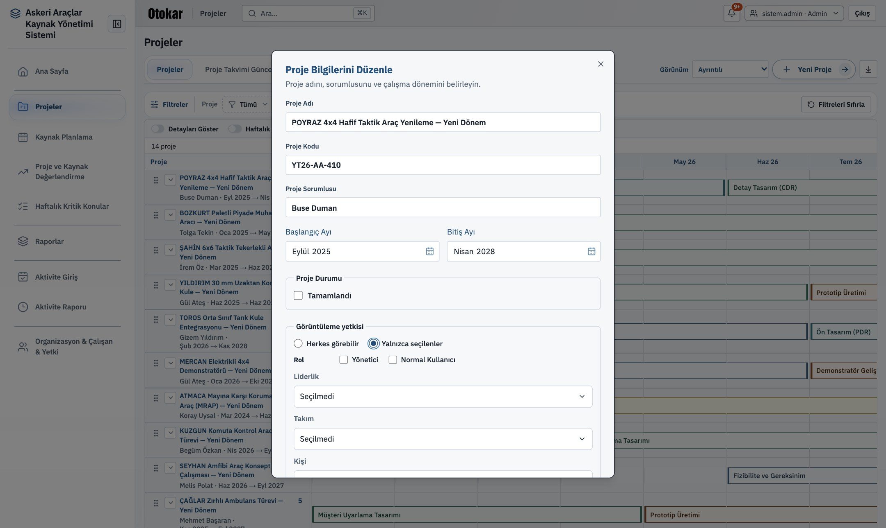
Proje bilgileri penceresi: "Yalnızca seçilenler" ile rol, liderlik, takım ve kişi kuralları tanımlanır.
Kurallar
Herkes görebilir varsayılandır.
Yalnızca seçilenler seçilip hiçbir seçim yapılmazsa proje yine herkese açık kalır.
Kurallar "veya" ile birleşir: seçilen rol, liderlik, takım veya kişiden herhangi birine uyan kullanıcı projeyi görür.
Liderlik kuralı alt liderlik ve takımları da kapsar.
Otomatik görünürlük
Admin ve Normal-Proje her projeyi görür.
Projede planlanan kaynağı olan takımlar ve gerçekleşen girişi olan kişiler projeyi kurala bakılmaksızın görür.
Gizli projelerin kaynakları toplamlarda korunur; yalnız adı ve satırları gösterilmez.
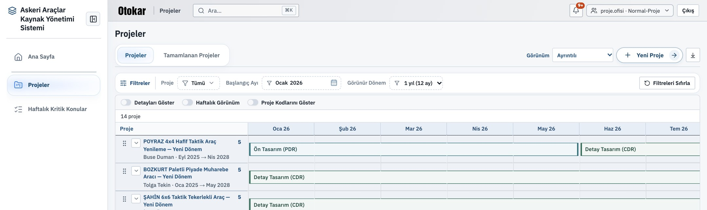
Normal-Proje rolü: menüde Ana Sayfa, Projeler ve Haftalık Kritik Konular; Yeni Proje açıktır.
5. Proje Takvimi Güncelle (senaryo)
Bir veya birkaç proje ertelenirse ya da öne çekilirse kaynak durumunun nasıl değişeceğini, kayıtları değiştirmeden gösterir. Projeler ekranının Proje Takvimi Güncelle alt sekmesindedir; Admin ve Yönetici içindir. Admin, onay bekleyen senaryo sayısını sekmedeki rozetten görür.
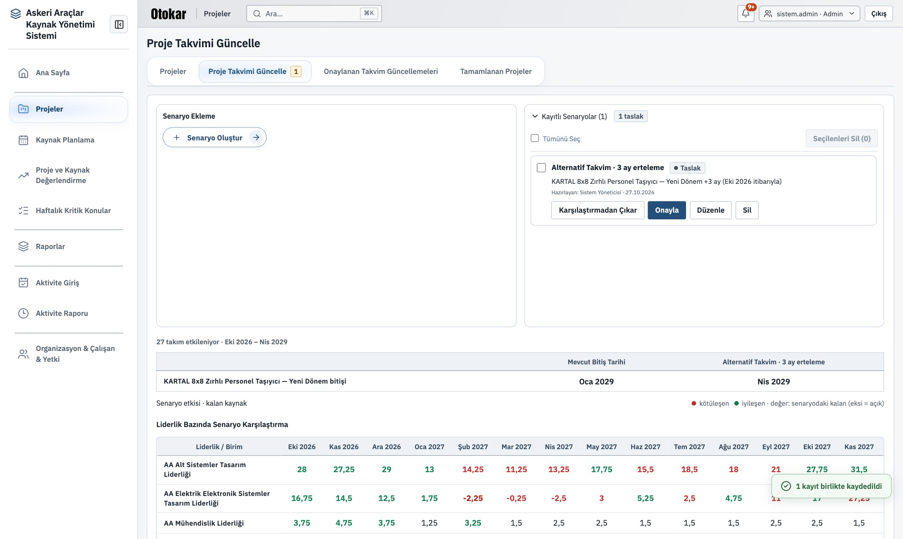
Senaryo Ekleme, kayıtlı senaryolar ve Mevcut / Senaryo karşılaştırması. Kötüleşen hücreler kırmızı, iyileşenler yeşil.
Senaryo hazırlama
Senaryo Ekleme satırında Proje, Ay (artı: erteleme, eksi: öne çekme) ve Başlangıç Ayı seçin. Önceki aylar ve gerçekleşen girişler yerinde kalır. Birden fazla proje için + Proje Ekle. "Aşamalar, başlıklar ve kilometre taşları da kaysın" varsayılan olarak açıktır.
Ekle senaryoyu taslak olarak kaydeder. Kopyala aynı projelerle yeni bir senaryo açar; Temizle satırdaki seçimleri boşaltır. En fazla 3 senaryo yan yana karşılaştırılır.
Karşılaştırma; proje bitişini, liderlik ve takım bazında kalan kaynağı gösterir. Hücrenin üzerine gelince mevcut değer görünür.
Kayıtlı Senaryolar listesinde Admin Onayla ile kararı kaydeder; onaylı senaryonun içeriği değişmez.
Takvime Aktar projelerin dönemini, planlanan değerlerini, aşamalarını ve kilometre taşlarını tek işlemde kaydırır; kaç kaydın taşınacağı önce sorulur. Aynı projeleri içeren diğer senaryolar "Kapatıldı" olur. Kapatılanları Sil bunları topluca siler.
Geri Al takvimi aktarmadan önceki haline döndürür. Aktarmadan sonra bu projelerde başka değişiklik yapıldıysa geri alma reddedilir. Yönetici yalnız kendi taslağını düzenler ve siler.
6. Kaynak Planlama
Admin ve Yönetici içindir. Değerler kişi bazında değil, takım veya liderlik kaynağı için kişi eşdeğeri olarak girilir (0,5 = yarım kaynak).
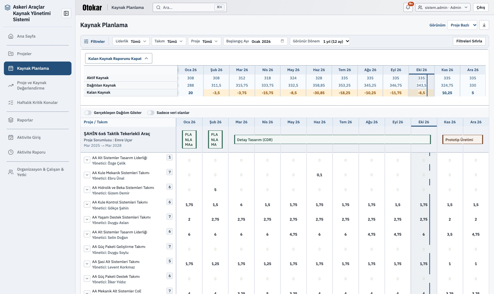
Üstte Kalan Kaynak Raporu (Aktif / Dağıtılan / Kalan Kaynak); altta proje bazında takım dağılımı.
Kaynak planlama
Görünüm olarak Proje Bazlı veya Takım Bazlı seçin; filtreleri belirleyin.
Yetkili olduğunuz ay hücresine değeri yazıp Enter'a basın. Yetkisiz veya proje dönemi dışındaki hücreler kilitlidir.
Kalan Kaynak negatifse kaynak açığıdır ve renkli gösterilir. Rapor Kalan Kaynak Raporunu Kapat ile gizlenir.
Hızlı giriş
İşlem
Yöntem
Birden fazla hücre seçmek
Fareyi basılı tutup sürükleyin; Ctrl ile tıklayarak seçime hücre ekleyin veya çıkarın.
Seçimi tek hücreye indirmek
Seçili hücrelerden birine (Ctrl'siz) tıklayın; seçim yalnız o hücre olur.
Seçime aynı değeri yazmak
Değeri yazıp Ctrl+Enter.
Kopyala / yapıştır
Ctrl+C / Ctrl+V veya sağ tık menüsü; takım/ay düzeni korunur.
Seçimi kaldırmak
Esc veya tablo dışına tıklama.
Gerçekleşen Dağılım Göster plan değerlerinin yanında gerçekleşenleri de gösterir; Sadece veri olanlar boş satırları gizler.
Tüm planı temizleyen Tüm Kaynak Dağılımlarını Sıfırla bu ekranda değil, yalnız Admin'in açabildiği Organizasyon & Çalışan & Yetki ekranındadır (12. bölüm).
7. Proje ve Kaynak Değerlendirme YENİ
Admin ve Yönetici içindir. Her liderlik, projedeki işinin aylık hedef tamamlanma yüzdesini planlar ve her ay gerçekleşen yüzdeyi girer; sistem sapmayı kaynak planıyla birlikte değerlendirir. Ekranda dört alt sekme vardır.
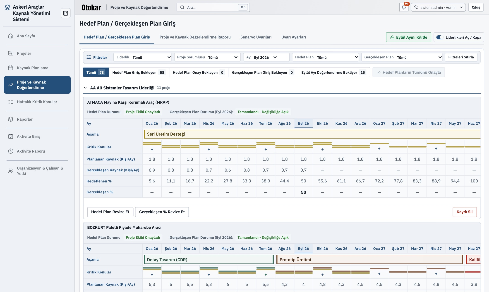
Hedef Plan / Gerçekleşen Plan Giriş: liderlik bazında proje kartları, durum filtreleri ve ay kilidi.
Hedef Plan / Gerçekleşen Plan Giriş
Kartta başlangıç yüzdesini ve aylık hedefleri hazırlayın, taslağı kaydedin ve proje ekibi onayına gönderin. Sıra: Yönetici Girişi Bekleniyor → Taslak → Proje Ekibi Onayında → Proje Ekibi Onayladı.
Onaydan sonra her ay o aya kadar tamamlanan toplam payı (%) ve açıklamayı girin. Örneğin %45, ay sonuna kadar işin %45'inin bittiğini gösterir.
Onaylı plan değişecekse Hedef Plan Revize Et ile gerekçeli revizyon hazırlanır; revizyon onaylanana kadar önceki plan geçerlidir. Yeni hedef, girilmiş gerçekleşen yüzdeden düşük olamaz (kilitli ay sınırında düşüşe izin verilir).
Kayıtlı gerçekleşen değeri ay kilitlenene kadar Gerçekleşen % Revize Et ile düzeltilir.
Üstteki kutucuklar kartları süzer: Hedef Plan Giriş Bekleyen, Hedef Plan Onay Bekleyen, Gerçekleşen Plan Giriş Bekleyen ve seçili ayın Değerlendirme Bekliyor sayısı. Admin, onay bekleyenleri tek tek veya Hedef Planların Tümünü Onayla ile onaylar; sayısı sekmedeki rozette görünür. Liderlikleri Aç / Kapa grupları açar veya kapatır.
Ay kilidi (Admin):[Ay] Ayını Kilitle seçili ayı değişikliğe kapatır ve ayın değerlendirmesini (senaryo uyarılarını) oluşturur. Kilit açılırsa değerlendirme kaldırılır ve girişler yeniden açılır. Yönetici kilitli ayı rozetten görür, kilidi açamaz.
Proje ve Kaynak Değerlendirme Raporu
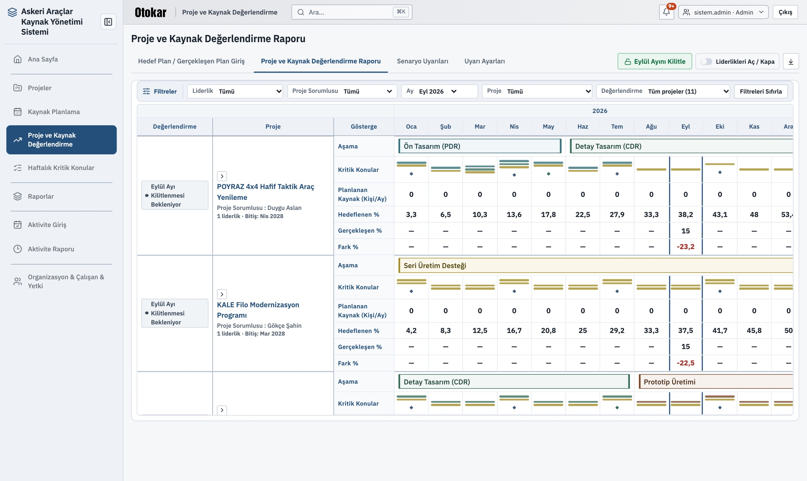
Her proje için aşama, kritik konular, planlanan kaynak, hedeflenen %, gerçekleşen % ve fark %.
Filtreler: Liderlik, Proje Sorumlusu, Ay, Proje ve Değerlendirme. Değerlendirme listesi projeleri karar durumuna göre süzer (Dikkat gerektiren konular, Planın İlerisinde, Planın Gerisinde / Kritik Gecikme, Değerlendirme bekliyor, Fazla kaynak değerlendirilebilir, Tamamlandı vb.); parantezdeki sayı o durumdaki proje sayısıdır.
Tüm projeler tek tabloda listelenir; tablo aşağı kaydırıldıkça sonraki projeler yüklenir. Liderlikleri Aç / Kapa liderlik satırlarını açar. İndirme düğmesi raporu Excel'e aktarır.
Senaryo Uyarıları
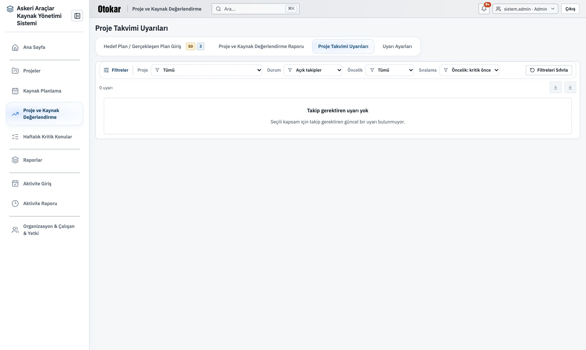
Kilitli aylarda oluşan uyarılar, durumları ve aksiyon açıklamaları.
Ay kilitlendiğinde her proje için ilerleme durumu (Planın İlerisinde, Planda, Planın Gerisinde, Kritik Gecikme) ile kaynak durumu (Planlanmamış, Yetersiz, Yeterli, Fazla) birleştirilir ve S-01…S-09 kurallarından uyan uyarı oluşur (örneğin S-02: "Ek kaynak gerekli veya bitiş tarihi revize edilmeli"). Uyarının durumu Açık → Görüldü → Aksiyon Alındı → Kapandı olarak ilerler; her adımda aksiyon açıklaması zorunludur. Hesap ve geçmiş hesaplamayı ve aksiyon geçmişini gösterir. Liste Excel veya CSV olarak indirilir.
Uyarı Ayarları (Admin)
Planın İlerisinde / Gerisinde ve Kritik Gecikme sapma eşikleri (puan), kaynak planı kontrol dönemi (ay), yeterli kaynak karşılama aralığı (%) ve kritik gecikme için ardışık kilitli ay sayısı buradan belirlenir. Ayarları Kaydet sonrası uyarılar yeniden değerlendirilir; Varsayılanları Getir ilk değerlere döner. Senaryo kural tablosu kuralların tamamını gösterir.
8. Haftalık Kritik Konular YENİ
Projelerde Kritik Konulara Ekle ile işaretlenen notlar proje ve başlık bazında hafta numaralarıyla listelenir. Admin ve Normal-Proje düzenler; Yönetici yalnız görüntüler.
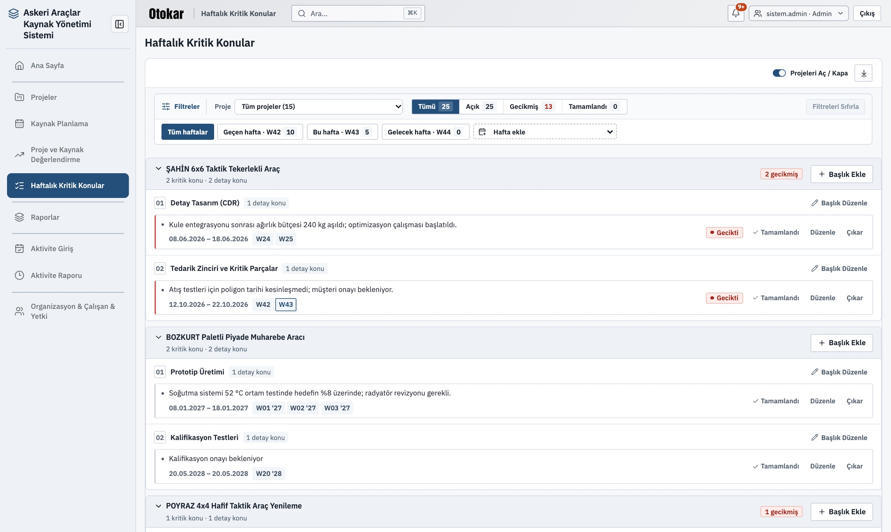
Durum ve hafta süzgeçleri; gecikmiş konular kırmızı "Gecikti" etiketiyle gösterilir.
Durum: Tümü, Açık, Gecikmiş, Tamamlandı (yanında sayıları). Hafta: Tüm haftalar, Geçen hafta, Bu hafta, Gelecek hafta; Hafta ekle ile başka haftalar seçilir. Konunun kapsadığı haftalar W-numaralarıyla yazılır.
Başlık Ekle ve Başlık Düzenle başlıkları; konu satırındaki Düzenle notu değiştirir. Değişiklikler Projeler ekranına da yansır.
Tamamlandı notu tamamlandı olarak işaretler (Geri Al ile kaldırılır); Çıkar notu yalnız bu listeden çıkarır, silmez.
Projeleri Aç / Kapa proje gruplarını açar veya kapatır. İndirme düğmesi listeyi Excel olarak indirir.
9. Raporlar ve Head Count
Admin ve Yönetici içindir. Kaynak Raporları ve Head Count alt sekmeleri vardır.
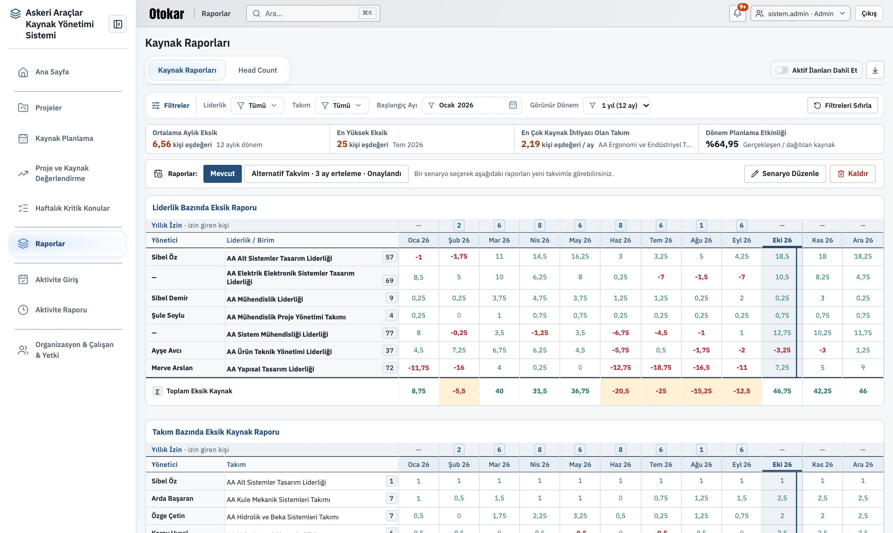
Özet kartlar, Liderlik Bazında Eksik Raporu ve Takım Bazında Eksik Kaynak Raporu.
Rapor / alan
Nasıl okunur?
Özet kartlar
Ortalama aylık eksik, en yüksek eksik, en çok kaynak ihtiyacı olan takım ve dönem planlama etkinliği (gerçekleşen / dağıtılan kaynak).
Liderlik / Takım Bazında Eksik
Birimlerin aylık kalan kaynağı; negatif değer açıktır. Yıllık İzin satırı ay ay izin giren kişi sayısını gösterir. Alt liderlikler üst toplamın kırılımıdır, tekrar toplanmaz.
Grafikler
Aylık eksik kaynak, planlanan / gerçekleşen karşılaştırması, süreç etkinliği ve çalışan sayısı öngörüsü. Grafik üzerinde gezinince ay değerleri görünür.
Senaryo seçimi
Proje Takvimi Güncelle'den Raporlarda Göster ile gelinince raporlar seçilen senaryoya göre çizilir; değişen hücreler çerçevelidir. Kayıtlar değişmez.
Aktif İlanları Dahil Et varsayılan olarak kapalıdır ve yalnız Admin değiştirebilir. Açıldığında tüm aktif ilanlar bugünkü tarihle kaynak planlamasına dahil edilir; bu işlem kayıtları değiştirir, yalnız görünümü değil.
Head Count
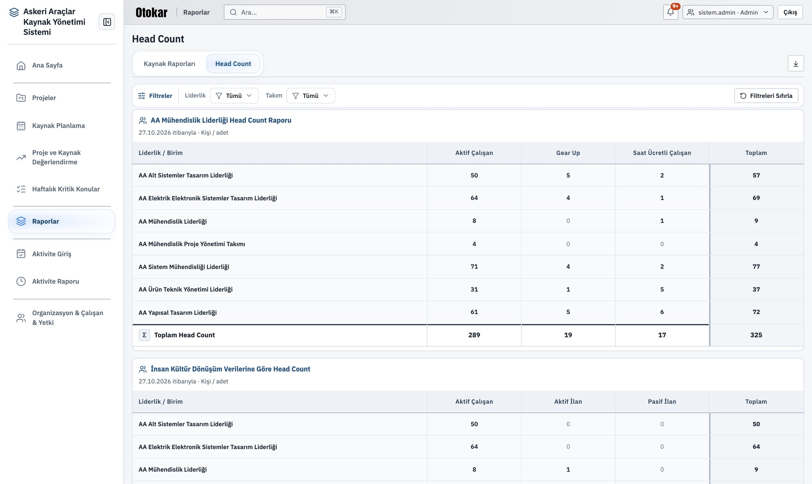
AA Mühendislik Liderliği Head Count Raporu.
AA Mühendislik Liderliği Head Count Raporu: Aktif Çalışan + Gear Up + Saat Ücretli Çalışan.
İnsan Kültür Dönüşüm Verilerine Göre Head Count: Aktif Çalışan, Aktif İlan ve Pasif İlan ayrı gösterilir; Aktif İlan Dahil Head Count = Aktif Çalışan + Aktif İlan.
Bugünkü durumu kişi/adet olarak sayar; plana dahil seçimine bağlı değildir. İndirme düğmesi Excel çıktısı verir.
10. Aktivite Giriş ve takvimler
Çalışanların projelere fiilen ayırdığı süre aylık olarak burada girilir (önceki sürümde "Gerçekleşen Kaynak Dağılımı"). Görünüm: Proje Bazlı (proje altında kişiler) veya Kişi Bazlı (kişi altında projeler). Kaynak Dağılım Birimi: Yüzde (%) veya Saat.
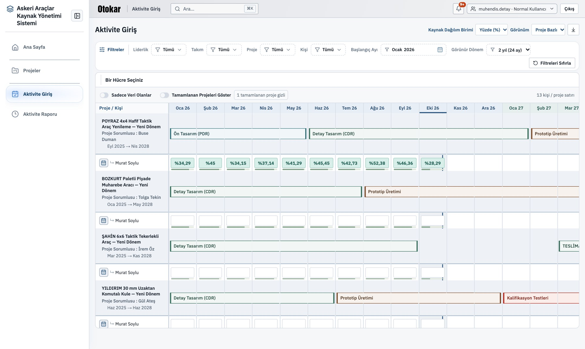
Normal Kullanıcı görünümü: giriş kutuları yalnız kendi satırında açıktır. Hücre altındaki çubuk kişinin o ay tüm projelerdeki toplamını gösterir.
Aylık süre girme
Filtrelerden kişi, proje ve dönemi seçin; birimi belirleyin.
Ay hücresine değeri yazıp Enter'a basın veya hücreden çıkın. Hücre seçilince üstte çalışan, ay, çalışma saati ve Kalan bilgisi görünür.
Giriş yalnız içinde bulunulan ay ve geçmiş aylar için, proje dönemi içinde yapılabilir. Proje süreleri ile eğitim toplamı kişinin net aylık kapasitesini aşamaz.
Ortak çalışma takvimi (Admin)
Araç satırındaki Çalışma Takvimi resmî tatilleri gösterir; resmî ve dini bayramlar sistemde tanımlıdır. Kuruma özel çalışma dışı günler Elle Girilmiş Tarihler bölümünde eklenir veya silinir; değişiklikler Takvimi Kaydet ile kalıcı olur.
Kişisel izin ve eğitim takvimi
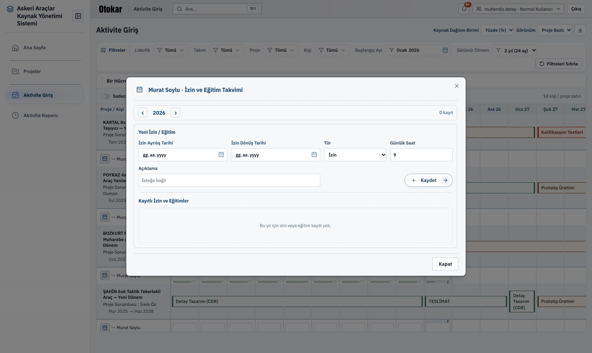
Çalışan adının solundaki takvim simgesiyle açılan İzin ve Eğitim Takvimi.
Çalışan adının solundaki takvim simgesine tıklayın; üstteki oklarla yıl değiştirilir.
Yeni İzin / Eğitim bölümünde İzin Ayrılış Tarihi, İzin Dönüş Tarihi, Tür ve Günlük Saat girin; isterseniz Açıklama ekleyin. Kaydet.
Kayıtlar Kayıtlı İzin ve Eğitimler listesinde Düzenle veya Sil ile yönetilir.
Dönüş günü hesaba katılmaz. 12 Ekim ayrılış, 15 Ekim dönüş için 12, 13 ve 14 Ekim değerlendirilir. Hafta sonları ve tatiller atlanır. İzin çalışma saatinden düşer; eğitim dağıtılan süreye eklenir. Günlük saat 0,5–9 aralığındadır.
Kişisel takvimi yalnız çalışanın kendisi ve Admin görür ve düzenler. Admin, tüm kayıtları Organizasyon ekranındaki Çalışan İzin ve Eğitim Kayıtları listesinde de görür.
11. Aktivite Raporu
Çalışanların seçili dönemdeki aylık aktivite toplamlarını takım grupları halinde gösterir; yalnız görüntüleme içindir. Düzeltmeler Aktivite Giriş'te veya kişisel takvimde yapılır.
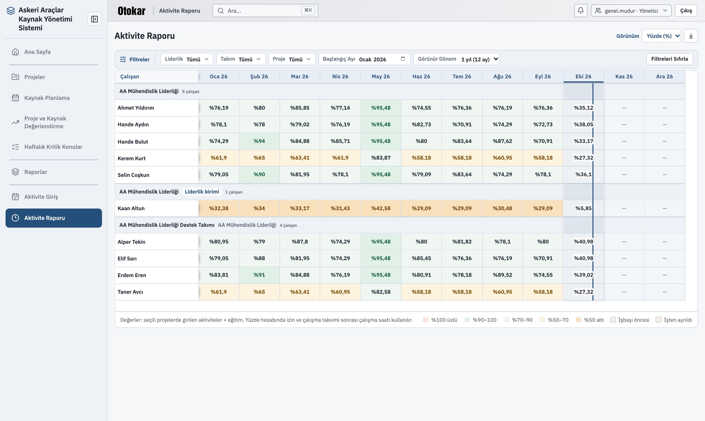
Takım başlıkları altında çalışanlar; hücre rengi aylık doluluğu gösterir.
Görünüm: Yüzde (%) veya Saat. Değerler seçili projelerdeki aktiviteler ile eğitimin toplamıdır; yüzde hesabında izin ve çalışma takvimi sonrası çalışma saati kullanılır.
Renk bantlarıYENİ:
%100 üstü ·
%90–100 ·
%70–90 ·
%50–70 ·
%50 altı. İçinde bulunulan ay ve boş hücreler renklendirilmez; proje filtresi seçiliyken renk kullanılmaz.
İşbaşı öncesi ve işten ayrılış sonrası aylar ayrıca işaretlenir. Sayfa başına 100 satır gösterilir; Önceki / Sonraki ile gezilir.
Excel'e aktarmaYENİ: Görünüm'ün sağındaki indirme düğmesi raporu Liderlik, Takım, Çalışan ve aylık değer sütunlarıyla, aynı renk bantlarıyla indirir.
Kapsam: Admin tümünü, Yönetici kendi liderliğini ve alt birimlerini, Normal Kullanıcı kendi takımını görür.
12. Organizasyon & Çalışan & Yetki
Yalnız Admin içindir. Çalışan & Yetki Tanımlama ve Organizasyon Yapısı alt sekmeleri vardır.
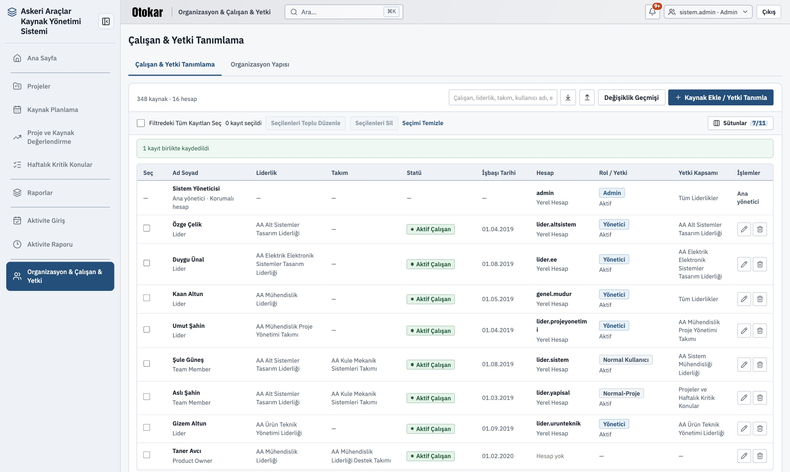
Çalışan listesi: statü, plana dahil bilgisi, tarihler, hesap, rol ve yetki kapsamı. Altta Çalışan İzin ve Eğitim Kayıtları.
Arama kutusu ad, liderlik, takım, kullanıcı adı veya e-postaya göre süzer. Sütunlar isteğe bağlı sütunları gizler/gösterir.
Satırlar seçilip Seçilenleri Toplu Düzenle veya Seçilenleri Sil uygulanır; Filtredeki Tüm Kayıtları Seç tüm sonucu seçer. Liste 50'şer kayıtlık sayfalarla gezilir.
Yükleme (↑) düğmesi Excel şablonundan kaynak ekler; önce önizleme gösterir, hesap veya yetki oluşturmaz.
Geçmişi korumak için çalışanı silmek yerine statüsünü İşten Ayrıldı yapın; silme, gerçekleşen kayıtları da kaldırır.
Excel çıktıları: Arama kutusunun yanındaki indirme (↓) düğmesi filtredeki tüm çalışan ve hesapları (tüm sayfalar, tüm sütunlar) indirir. Çalışan İzin ve Eğitim Kayıtları tablosunun sağ üstündeki düğme izin/eğitim listesini indirir.
Tüm Kaynak Dağılımlarını Sıfırla: İzin ve eğitim kayıtları tablosunun üstündeki Kaynak planlama verisi şeridindedir. Ekran filtresinden bağımsız olarak tüm liderliklerin, projelerin ve ayların planlanan kaynak dağılımını temizler; çalışan, kapasite ve proje kayıtları korunur. Uygulama içinden geri alınamaz; işlemden önce kullanıcı menüsünden veri yedeği alın.
Çalışan veya ilan ekleme ve hesap tanımlama
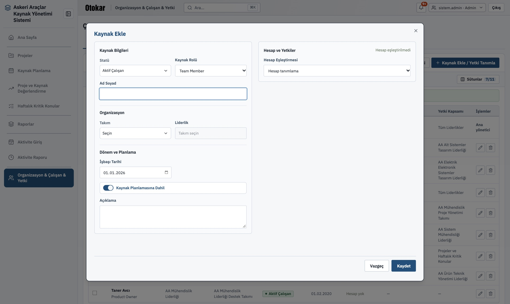
Kaynak Ekle penceresi: solda Kaynak Bilgileri, Organizasyon ve Dönem ve Planlama; sağda Hesap ve Yetkiler.
Kaynak Ekle / Yetki Tanımla ile önce Statü ve Kaynak Rolü seçin; Ad Soyad girin.
Takım seçin; liderlik takımdan kendiliğinden gelir (Lider rolünde yalnız liderlik seçilir). İşbaşı tarihi ve Kaynak Planlamasına Dahil seçimini girin.
Hesap Eşleştirmesi alanından Active Directory seçip kullanıcıyı arayın ve Rol belirleyin. Yönetici için planlama yetkisi ağacından liderlik veya takım seçin. Kaydet.
Uygulama Yetkisini Kaldır, çalışanı ve AD hesabını silmeden erişimi kapatır.
Statü
Form davranışı
Aktif Çalışan / Gear Up / SAAT Ücretli Ofis Ç.
İşbaşı tarihi zorunludur.
Aktif İlan
Ad ve kaynak rolü istenmez. Dahil etmek için tahmini işbaşı tarihi gerekir. İlana hesap tanımlanamaz.
Pasif İlan
Aktif kapasiteye eklenmez.
İşten Ayrıldı
İşbaşı ve ayrılış tarihleri gerekir; eski gerçekleşen kayıtları korunur.
Organizasyon Yapısı
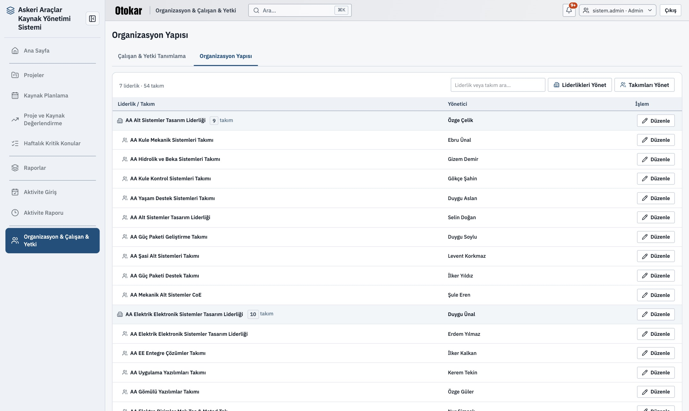
Liderlikler, bağlı takımlar ve yöneticileri.
Liderlikler ve takımlar ile aralarındaki bağlantılar burada düzenlenir. Yönetici adı Lider veya Product Owner atamasından gelir. Bağlı kayıtlar silmeyi engelleyebilir.
Değişiklik Geçmişi ve veri yedeği
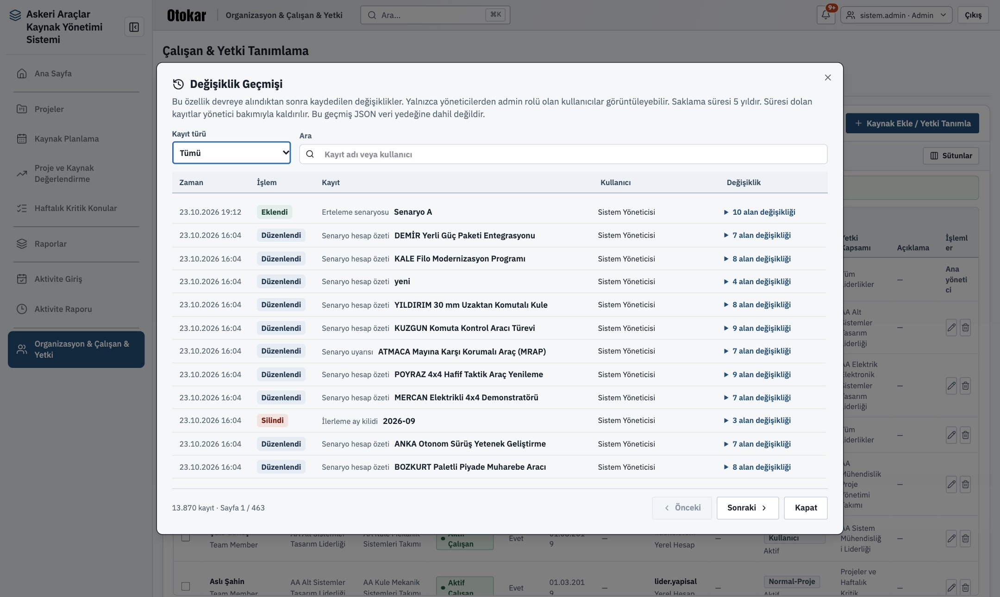
Değişiklik Geçmişi: kayıt türü ve metin filtresi, işlem türü, kullanıcı ve alan değişiklikleri.
Değişiklik Geçmişi kim, ne zaman, hangi kaydı ekledi, düzenledi veya sildi gösterir; satır açılınca eski ve yeni değerler görünür. Kayıtlar 5 yıl saklanır.
Veri Yedeği İndir (kullanıcı menüsü) şifrelenmemiş JSON planlama yedeğidir; hesap ve oturum bilgisi içermez. Yedek Yükle mevcut verinin yerine geçer, birleştirmez.
13. Yetki matrisi
Düzenler görüntüler ve değiştirirKapsamlı yalnız belirtilen kapsamdaGörür yalnız görüntüler— erişim yok
13.1 Ekran erişimi
Ekran
Admin
Yönetici
Normal Kullanıcı
Normal-Proje
Projeler
DüzenlerTüm projeler
GörürGörünür projeler
GörürGörünür projeler
DüzenlerTüm projeler
Proje Takvimi Güncelle
DüzenlerOnay, aktarma, geri alma
KapsamlıKarşılaştırma ve kendi taslakları
—
—
Kaynak Planlama
DüzenlerTüm takımlar
KapsamlıTümünü görür; verilen liderlik/takımı düzenler
—
—
Proje ve Kaynak Değerlendirme
DüzenlerOnay, ay kilidi, uyarı ayarları
KapsamlıKendi liderliklerinin hedef ve gerçekleşen girişi